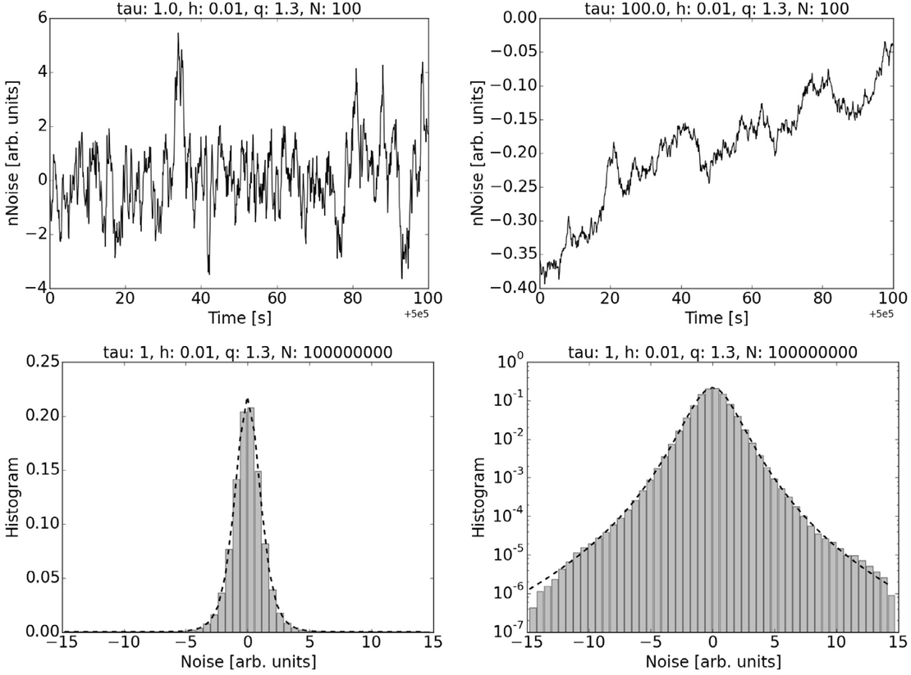
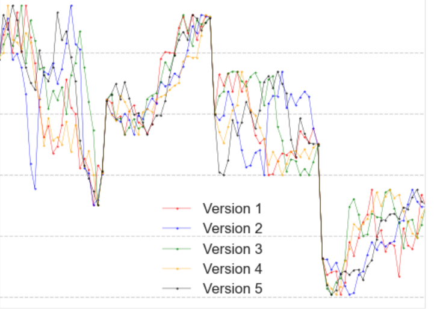

Non-Gaussian noise and synthetic time series
The randomness in real systems has memory and heavy tails, and simulating it honestly is a research problem of its own.
OneThe physics of it
A gust hitting a wind turbine, a fluctuation in a noisy circuit, a minute of Bitcoin trading: none is Gaussian, none is white, and most of what we want to model about them lives in the tailsa and in the memory. Gaussian white noise stays the default in simulation mostly because it is easy to generate. The problem this theme works on is generating noise with a prescribed departure from Gaussianity and a prescribed correlation time, cheaply and reproducibly, and then putting it to work: to fill in temporal resolution that real data do not have, and to study systems whose behaviour depends on the shape of the noise that drives them.
TwoWhy it is worth doing
Asset returns have heavy tails, and their volatility clusters into calm and turbulent stretches with long memory, the magnitude of the moves staying correlated over months while their direction does not, and these stylised facts hold across markets [1]. High-frequency records of them are expensive enough that academics routinely work with daily data while practitioners work with ticks [2], and the UK regulator has asked in public whether synthetic data could close that gap [3]. Time-series augmentation for neural networks lags a long way behind images, and the best-known methods are geometric transforms with no statistical model behind them [4]. On the physics side, the response of a nonlinear system to noise depends on the noise's non-Gaussianity, not only on its variance, which is why noise-induced transitions and stochastic resonance, effects in which noise flips a system between states or amplifies a weak signal, shift when the noise changes shape [5, 6]. And on the grid, wind-power ramps, the large rapid changes that force reserves to be scheduled, remain hard to forecast and expensive to miss [7] (the wind-ramps theme takes this up in full).
ThreeqNoise, and what we did with it
qNoise, published in SoftwareX [8] and written with Ignacio Deza, is a small generator for coloured noiseb whose stationary distribution, the distribution its values settle into over a long run, is controlled by a single parameter: below one the distribution is bounded, at one it is Ornstein-Uhlenbeckc, above one the tails become heavy. It is a few hundred lines, unit-tested, and on GitHub. We used it to embed temporal resolution into financial series: regenerating minute-level paths inside a daily candlestick that respect the open, high, low and close and match the distribution of real intraday differences. On the energy side, with Russell Sharp, we characterised ramps at a wind farm in north-eastern France, on Engie's open La Haute Borne data, with a non-binary ramp function and found recurrent networks predicted them better than the classical time-series models we compared [9, 10].


FourWhere to take it
- Augmentation with a statistical model behind it: Train a forecaster on qNoise-augmented data and on geometric augmentations, and test on held-out real high-frequency data. Does matching the tails and the memory help, and when does it hurt? MSc
- Ensemble forecasting for finance and energy, run the way weather prediction does it: many plausible synthetic paths, a distribution of outcomes, and a proper score, one that rewards honest probabilities. MSc or PhD
- Intra-candlestick statistics: The most probable path through a bar, from the bar alone, and what it says about the process that generated it. PhD
- Stochastic generators as explanation: Fit qNoise parameters to the output of a generative neural network, a GAN or an autoencoder, and use them to say in plain statistical language what the network learned. MSc
- Ramp forecasting that joins numerical weather prediction with learned models, scored by the cost of a missed ramp rather than by point error. MSc or PhD
Notes
a The tails of a distribution are its extreme values; heavy tails means extremes arrive far more often than the Gaussian bell curve allows. ↩
b Coloured noise has memory: successive values are correlated, where white noise draws each value afresh. ↩
c The Ornstein-Uhlenbeck process is the standard model of correlated Gaussian noise: randomness pushes the value about while a restoring pull draws it back to a mean. ↩
References
- Cont, R. (2001). Empirical properties of asset returns: stylized facts and statistical issues. Quantitative Finance, 1(2), 223-236. doi:10.1080/713665670
- Cliff, D. (2018). BSE: a minimal simulation of a limit-order-book stock exchange. 30th European Modeling and Simulation Symposium (EMSS 2018), Budapest.
- Financial Conduct Authority (2022). Call for input: synthetic data to support financial services innovation. fca.org.uk
- Iwana, B. K. and Uchida, S. (2021). An empirical survey of data augmentation for time series classification with neural networks. PLOS ONE, 16(7), e0254841. doi:10.1371/journal.pone.0254841
- Wio, H. S. and Toral, R. (2004). Effect of non-Gaussian noise sources in a noise-induced transition. Physica D: Nonlinear Phenomena, 193, 161-168. doi:10.1016/j.physd.2004.01.017
- Fuentes, M. A., Toral, R. and Wio, H. S. (2001). Enhancement of stochastic resonance: the role of non-Gaussian noises. Physica A, 295, 114-122.
- Gallego-Castillo, C., Cuerva-Tejero, A. and Lopez-Garcia, O. (2015). A review on the recent history of wind power ramp forecasting. Renewable and Sustainable Energy Reviews, 52, 1148-1157. doi:10.1016/j.rser.2015.07.154
- Deza, J. I. and Ihshaish, H. (2022). qNoise: a generator of non-Gaussian colored noise. SoftwareX, 18, 101034. doi:10.1016/j.softx.2022.101034. Code: github.com/ihshaish/qNoise
- Sharp, R., Ihshaish, H. and Deza, J. I. (2021). Wind power ramp characterisation and forecasting using numerical weather prediction and machine learning models. Preprint, SSRN 3997702, written for the Tackling Climate Change with Machine Learning workshop at NeurIPS 2021.
- Sharp, R., Ihshaish, H. and Deza, J. I. (2022). Integrating wind variability to modelling wind-ramp events using a non-binary ramp function and deep learning models. SEEDS 2022, International Conference for Sustainable Ecological Engineering Design for Society. Thesis: ihshaish.github.io/post/sharp